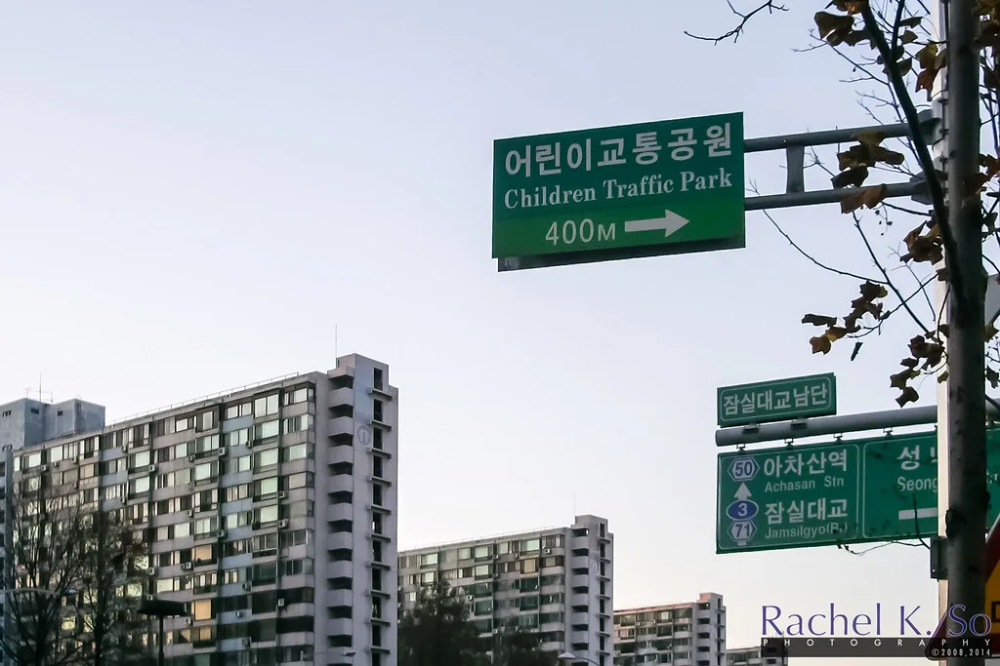

주택담보대출 변동금리의 기준이 되는 자금조달비용지수(코픽스)가 2년 8개월 만에 가장 높은 수준으로 올랐다. 은행연합회에 따르면 10월 신규 취급액 기준 코픽스는 연 3.62%로 전월(3.43%)보다 0.19%포인트 상승했다. 이는 2024년 2월과 같은 수준으로, 그 이후 최고치다. 9월에 0.25%포인트 오른 데 이어 두 달 연속 큰 폭으로 뛰면서 누적 상승폭은 0.44%포인트에 이른다.
다른 기준의 코픽스도 일제히 올랐다. 잔액 기준 코픽스는 3.26%로 0.11%포인트, 신잔액 기준 코픽스는 2.79%에서 2.93%로 0.14%포인트 상승했다. 코픽스는 국내 주요 은행들이 예금과 은행채 등으로 자금을 조달할 때 드는 평균 비용을 보여 주는 지표로, 이 수치가 오르면 이를 기준으로 삼는 변동형 대출 금리도 함께 높아진다. 신규 취급액 기준은 시장 변화를 빠르게 반영하는 반면, 잔액 기준은 상대적으로 천천히 움직이는 특징이 있어 이번처럼 둘 다 오른 것은 조달 비용 부담이 폭넓게 커졌다는 신호로 읽힌다.

상승의 직접적인 원인으로는 은행들의 예금 유치 경쟁이 꼽힌다. 은행들이 고객 자금을 끌어오기 위해 예금 금리를 잇따라 올리면서 자금조달 비용이 커졌고, 은행채 등 시장금리 상승도 부담을 키웠다. 대출 수요를 관리하라는 금융당국의 주문 속에 은행들이 가산금리를 크게 낮추기 어려운 상황이어서 조달 비용 상승분이 대출 금리에 거의 그대로 반영되는 구조다.
새 코픽스는 17일부터 신규 대출에 적용됐다. 우리은행은 신규 취급액 기준 변동형 주담대 금리를 기존 연 4.85~6.05%에서 5.04~6.24%로 올려 최저금리가 처음으로 5%를 넘었다. KB국민은행도 같은 기준 금리를 연 4.66~6.06%에서 4.85~6.25%로 인상하는 것으로 알려졌다. 다른 시중은행들도 비슷한 폭의 조정에 나설 것으로 보여, 이제 은행권에서 4%대 변동금리 주담대를 찾기는 점점 어려워지는 분위기다.
가계의 이자 부담은 커질 수밖에 없다. 변동금리 대출은 보통 일정 주기마다 코픽스 변동을 반영해 금리가 다시 정해지기 때문에, 기존 대출자도 금리 재산정 시점이 다가오면 상환액이 늘어날 수 있다. 특히 대출 규모가 큰 수도권 주택 구매자나 최근 몇 년 사이 무리하게 대출을 받은 이른바 영끌 차주에게는 적지 않은 부담이 될 전망이다.
금리 상승은 주택시장 흐름에도 영향을 줄 수 있다. 대출 문턱이 높아지면 매수 심리가 위축되고 거래량이 줄어드는 경향이 있기 때문이다. 다만 시장 전문가들은 정부의 대출 규제와 공급 정책, 지역별 수급 상황 등 다양한 변수가 함께 작용하는 만큼 금리 하나만으로 집값 방향을 단정하기는 어렵다고 본다. 금리 상승이 대출 수요를 얼마나 억누를지는 앞으로 몇 달간의 거래 지표에서 드러날 것으로 보인다.
대출을 새로 받거나 갈아타려는 소비자라면 변동형과 고정형 금리 차이를 꼼꼼히 비교해 볼 필요가 있다. 코픽스 상승세가 당분간 이어질 가능성이 거론되는 만큼, 상환 기간과 금리 재산정 주기, 중도상환수수료 등을 따져 자신에게 맞는 상품을 고르는 것이 중요하다. 은행권의 예금 경쟁과 시장금리 흐름이 언제 진정될지가 향후 대출 금리 방향을 가를 핵심 변수가 될 전망이다.